pdf della lezione Il BFS serve per calcolare i cammini minimi da una sorgente
Il DFS no quindi a che serve?
Oggi risponderemo a questa domanda
Rivediamo l’algoritmo DFS ALGORITMI LEZ.15
- algoritmo ricorsivo
- restituisce l’albero DFS, inizialmente vuoto
- albero che verra riempito con tutti gli archi visitati
Algoritmo DFS con aggiunta di clock
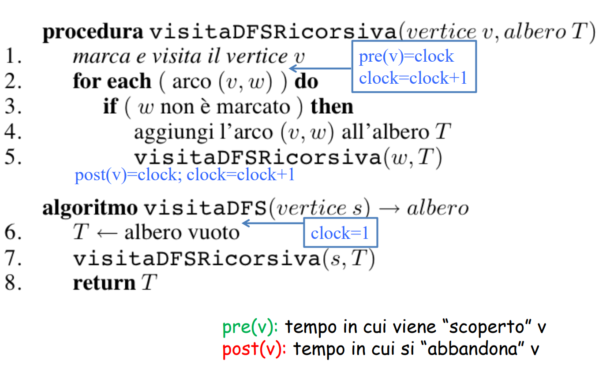 questa aggiunta ci consente di tenere conto
-
il tempo di visita iniziale
-
il tempo che intercorre tra la visita iniziale e finale
- dove in mezzo ci saranno state ipotetiche visite
-
possiamo vedere come nell’algoritmo visitaDFS inizializziamo clock a 1 globalmente
-
che succede se alcuni vertici non sono raggiungibili da S?
- non li conta
- ci sono delle situazioni in cui invece conta visitarli quindi ora vedremo un codice modificato che visita tutti i vertici
Codice
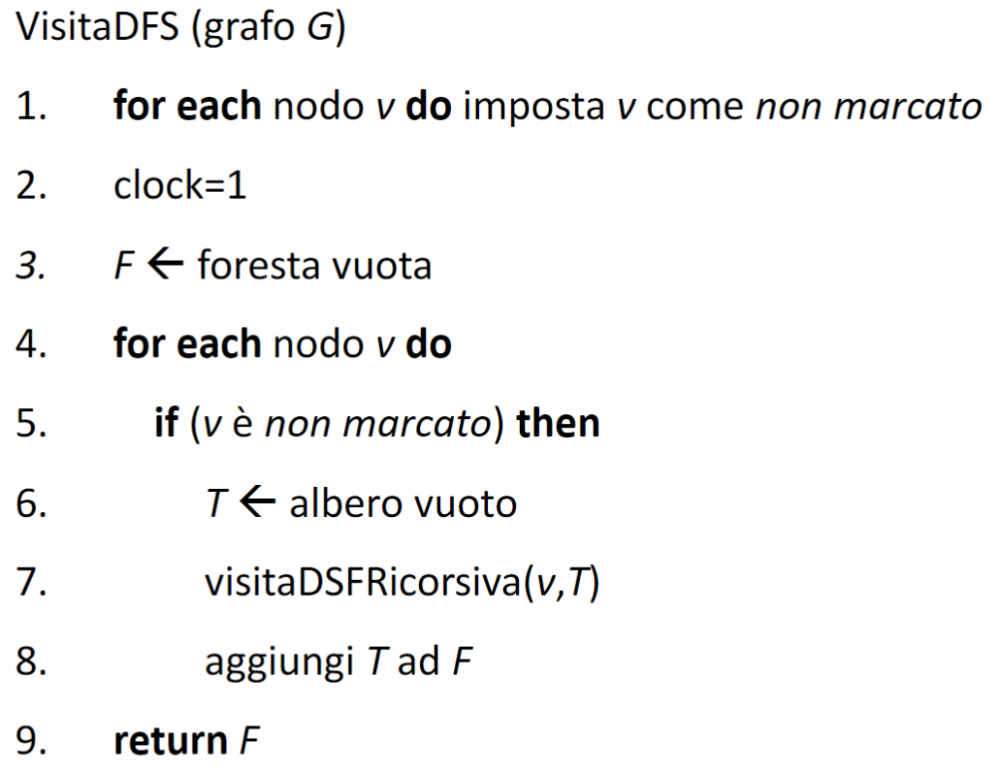
- lui si scorre prima tutti i nodi anche quelli non collegati
- poi fa la chiamata ricorsiva per ogni nodo che non è stato già marcato dalle precedenti chiamate
esempio grafico un pò storto
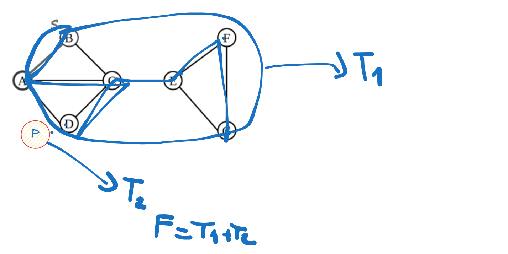
ESEMPIO GRAFICO
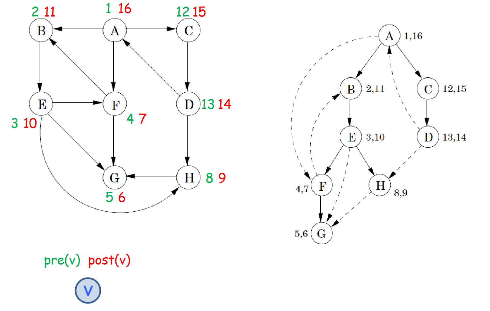
I contatori pre e post hanno delle proprietà particolari:
prendiamo due nodi e e giochiamoci un po’
- se prendiamo gli intervalli e
- succede che se i valori si incrociano uno è contenuto nell’altro(non sono disgiunti)
- è antenato di v se
- il e il sono compresi tra u
- sfruttando queste cose possiamo capire di un arco) il suo tipo
- in avanti. quando un nodo v è compreso in uno v
- indietro, quando un grafo
- trasversali, quando non si incrociano 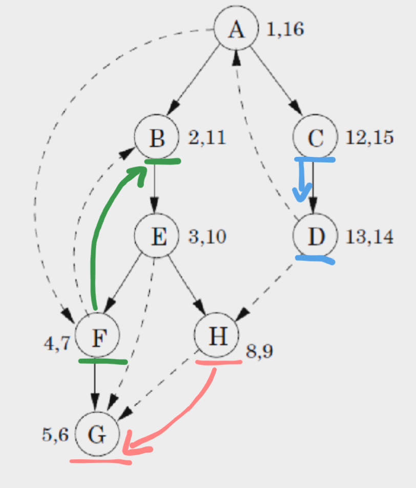 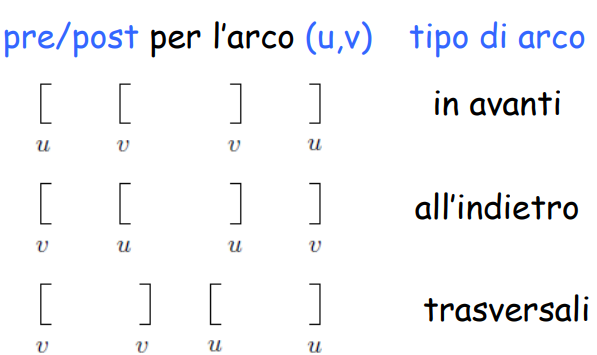
RICONOSCERE UN CICLO IN UN GRAFO G
- facciamo una visita DFS e capiamo se c’è un arco all’indietro
PROPRIETÀ
un grafo diretto G si dice che ha un ciclo se e solo se la visita DFS rivela un arco all’indietro
DIMOSTRAZIONE
⇐ se c’è un arco all’indietro allora c’è ciclo ⇒ supponiamo che esista un ciclo in G visto che è uguale a significa proprio che abbiamo un ciclo
- supponiamo che sia il primo nodo che visitiamo, visto che è raggiungibile da allora prima del termine delle visite di
- andrà da facendo verificare un arco all’indietro 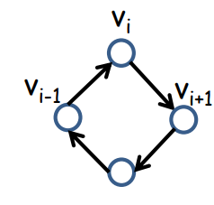
ORDINAMENTO TOPOLOGICO UN’ALTRO UTILIZZO DEI DFS
Definizione di DAG
Un Grafo G diretto si dice DAG quando è un grafo diretto senza cicli
Definizione di ORDINAMENTO TOPOLOGICO
- è un ordinamento di vertici in un certo ordine o o in modo che tutti gli archi vanno solo o a o a formalmente: È una funzione biettiva che mappa i vertici fra tale che per ogni arco il
La funzione σ serve per assegnare un numero a ogni nodo in modo che rispetti la direzione degli archi nel grafo. Se un nodo punta a un altro, deve venire prima nell’ordine.
in poche parole mette gli archi in ordine dei vertici con le posizioni in ordine
- il nodo deve essere in una posizione precedente di quelli con cui ha un arco 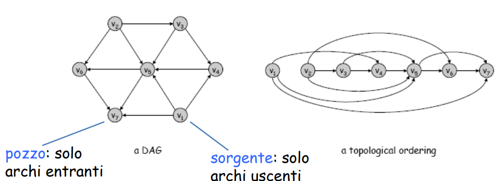
Ricorda molto la roba delle dipendenze
infatti l'ordine topologico ci consente di vedere le dipendenze sfruttabili
(creare un software che ordini le cose da progettare con le varie dipendenze)
se non ti ricordi: lezione sulle reti delle dipendenze
Quali grafi non ammettono ordinamento topologico?
- un ciclo sicuramente no perché ci sono dipendenze infinite
- UN DAG ammette sempre un ordinamento topologico? si Dimostriamolo per assurdo →
Dimostriamo che per ogni DAG abbiamo un ordinamento topologico ⇒ per assurdo poniamo come ordinamento topologico di e sia un ciclo allora <<…<<= così stiamo dimostrando che per ognuno di questi abbiamo un ordinamento topologico ovviamente senza contare quel nodo che forma il ciclo che poi verrà uguale
ordinamento topologico di un G non è per forza 1
Come aggiunta alla dimostrazione ora vedremo degli algoritmi che ordinano in modo topologico
ALGORITMO 1
- fai una visita DFS e ordina in modo decrescente rispetto ai tempi di fine visita post CODICE 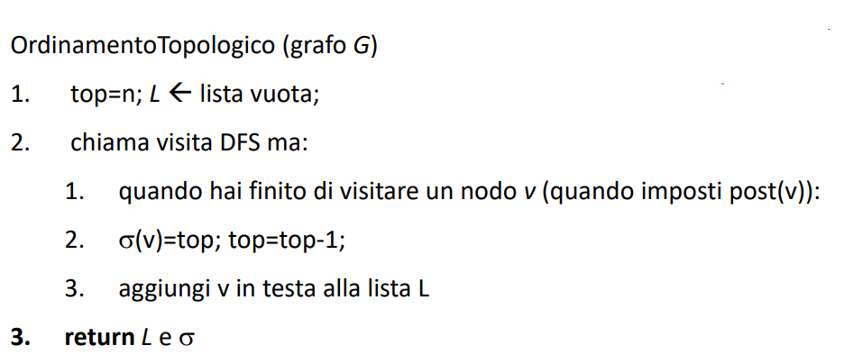
- ogni volta che finisce il primo vertice sarà quello più piccolo, quindi gli altri li aggiungiamo alla lista nello stesso tempo in cui finiscono
COSTA UGUALE ALLA VISITA IN PROFONDITA
ESEMPIO GRAFICO 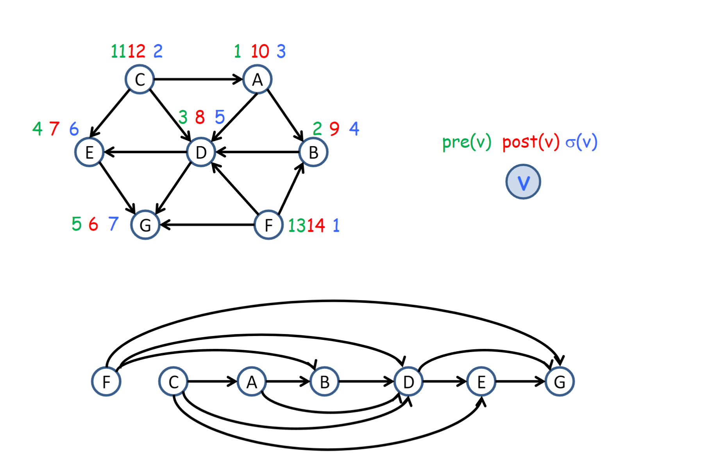 È CORRETTO?
- Si ma non dobbiamo prendere i passi all’indietro ovviamente
Un algoritmo alternativo
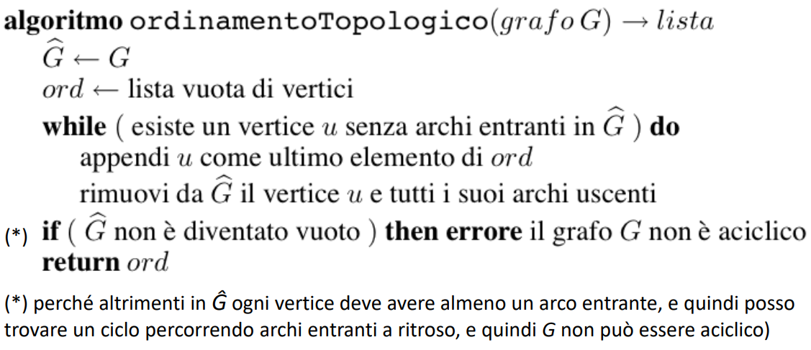
- troviamo un vertice senza archi entranti→ rimuoviamo tutti i suoi vertici incidenti
- troviamo il prossimo vertice senza archi entranti
- finchè non abbiamo più vertici senza archi entranti
- ha il vantaggio di far capire meglio la sua correttezza
- da implementare è piu difficile in tempo lineare
Tempo
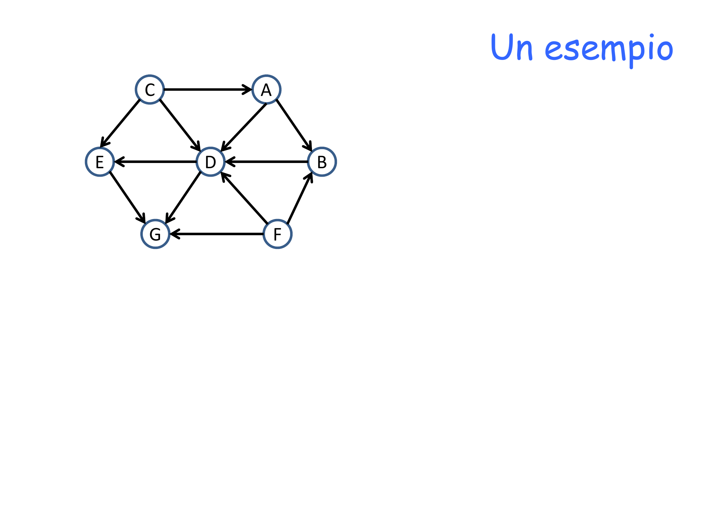
COMPONENTI FORTEMENTE CONNESSE
Un grafo è fortemente connesso se per ogni nodo v abbiamo una coppia ) ordinata possiamo avere che raggiunge e che raggiunge
- Le componenti fortemente connesse sono quelle tratteggiate Una componente fortemente connessa è una proprietà associabile a un grafo G con un insieme C di vertici che è massimale. Il numero massimo di vertici che formo con quei determinati nodi forma un insieme da mettere in C(i tratteggi)
def del prof
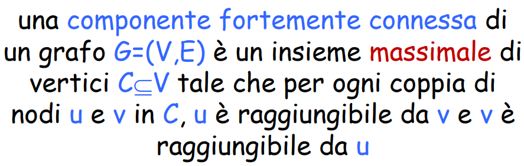
- CFC sorgente: una componente che non ha archi entranti da altre CFC.
- CFC pozzo: una componente che non ha archi uscenti verso altre CFC.
massimale: se tu all’istanza C aggiungi un nodo non risulta più vera la proprietà della componente fortemente connessa
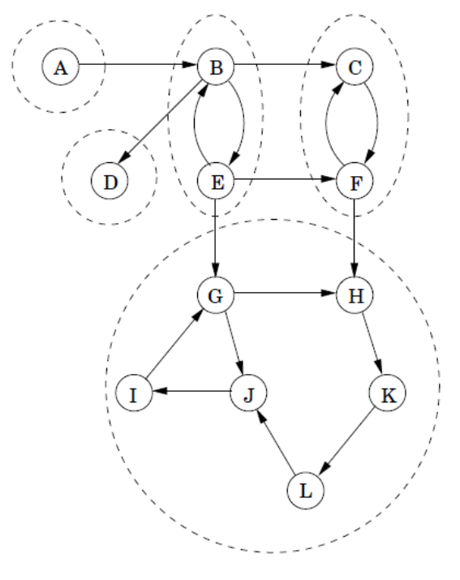
N.B E può raggiungere F ma F non E
Il grafo delle CFC rappresenta un DAG 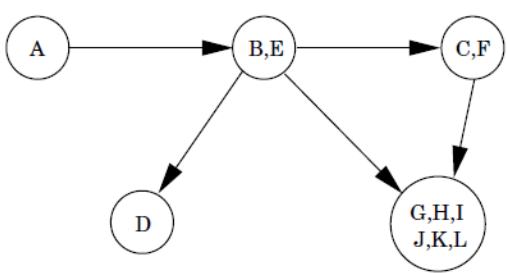
Questo problema per trovare tutte le CFC si può risolvere in O(n)
Diverse proprietà
Proprietà 1:
Se facessi partire la visita in uno dei vertici CFC raggiungerei solo i vertici di quella determinata componente pozzo Il codice termina quanto hai visitato tutti i nodi raggiungibili da
Proprietà 2:
Se e hanno un vertice che collega in allora inevitabilmente avrà una variabile
- deve prima scorrersi tutto e poi finirà
- se partiamo da non ci arriva mai in C
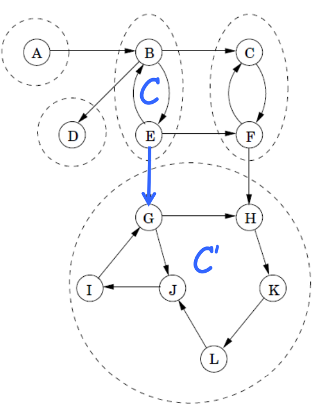
Proprietà 3:
Ci basta vedere chi ha il post più grande della singola visita DFS su un insieme CFC per trovare una componente di tipo sorgente
Noi ora abbiamo capito come trovare una sorgente abbiamo bisogno di una componente pozzo?
Invertiamo gli archi
invertiamo le direzioni per ottimizzare le cose del componente puzzo Rimane tutto invariato in termini di proprietà
- abbiamo il Grafo G→
- →creiamo il suo inverso 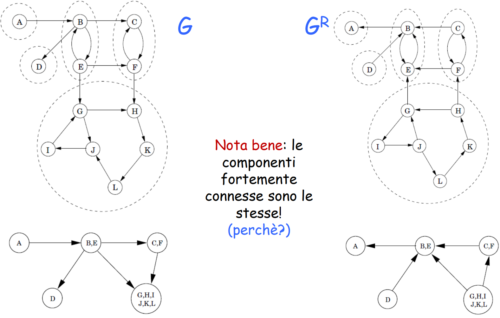
- Calcoliamo i valori di post visita e prendiamo il piu grande e ora troviamo la componente pozzo
ALGORITMO che mette insieme tute le idee
CODICE lo fa vedere dopo la spiegazione grafica alle slide dopo 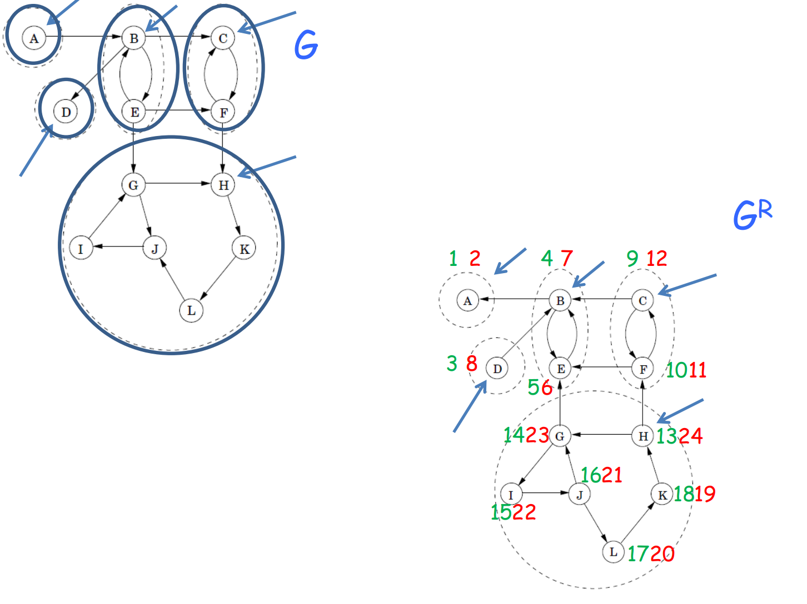
- inverto il grafo(nelle foto sopra è già invertito)costa lineare Fa una visita DFS completa del grafo Andiamo a fare una visita partendo da H, andiamo a prendere quindi tutti i componenti del suo CFC
- poi vediamo il valore piu piccolo del suo post 24 subito dopo e che non sia marcato e quindi di un’altra CFC
quindi tutto lineare
CODICE
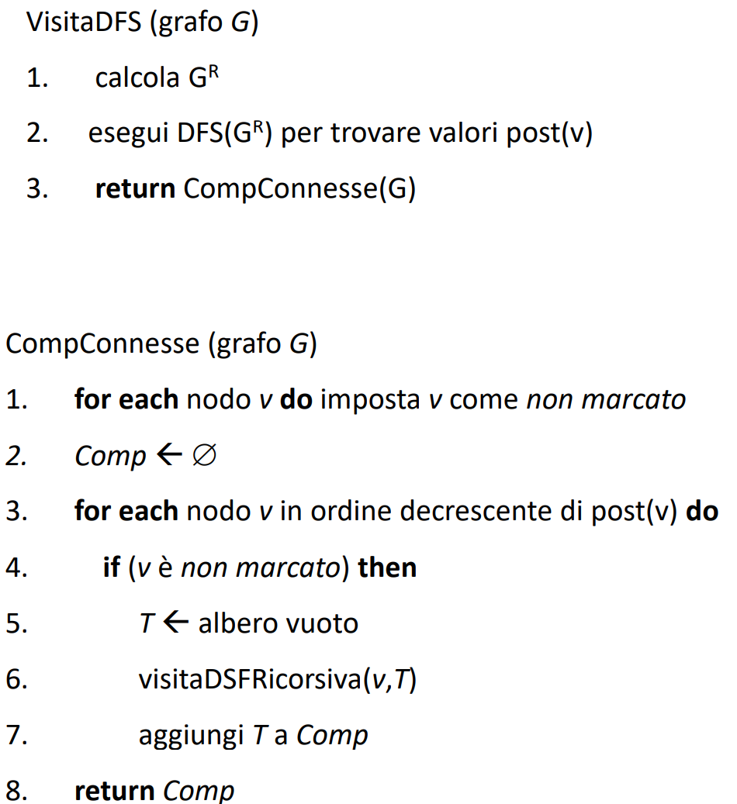 Il resto